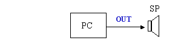
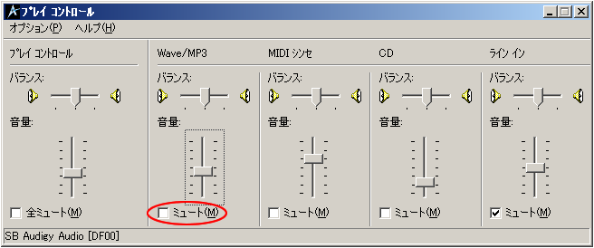
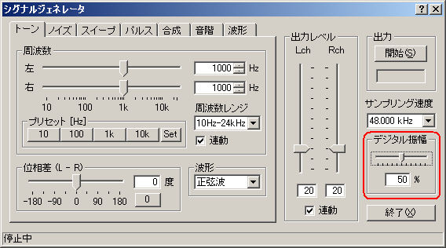
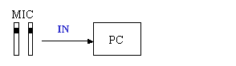
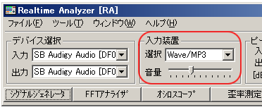

DSSF3 > RA > 操作マニュアル > 基本的な測定方法
信号の入出力
音を測定するとき、入力したアナログ信号は、最初にサウンドボードのデジタル信号に変換されます。デジタル信号はWindowsのミキサー装置からRAに送られます。RAのシグナルジェネレータでテスト信号を再生すると、信号は同じコースで逆方向に送られます。Windowsのプレイコントロール（音量調節）が入出力装置を選び、音量調節に使用されます。
入出力装置設定および音量調節
信号出力: RAは、Windowsのミキサー装置にデジタル信号を出力します。 出力音量はWindowsの音量調節によって調節されます。

Windowsの音量調節を開いて、WAVEのミュートがオフになっていることを確認します。

出力音量を制御するもう1つの重要な機能は、シグナルジェネレータの「デジタル出力」です。これは、歪みのないデジタル信号の範囲を調整します。多くのサウンドボードの性能が、最大出力レベルのあたりでパフォーマンスが低下します。測定の前に、出力信号の歪みの点検を推奨します。

信号入力: RAは、Windowsのミキサー装置からA/Dによって変換された信号を入力します。 マイクロフォンの入力、ラインで、デジタル信号は、同様に測定することができます。

RAのメインウインドウで入力装置を選択します。シグナルジェネレータの出力を測定するには、次のようにWAVE(サウンドボードにより表示は異なります)を選択します。

DSSF3 > RA > 操作マニュアル > 基本的な測定方法